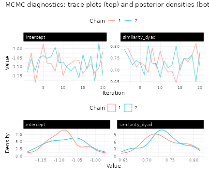
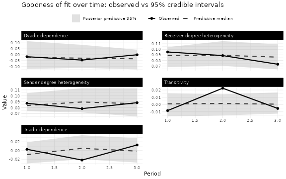
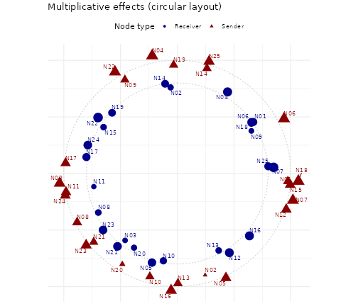
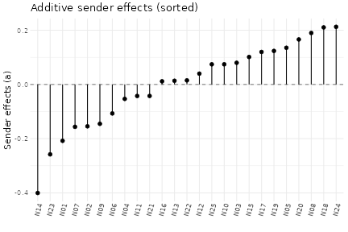

Getting Started with lame
Cassy Dorff, Shahryar Minhas, and Tosin Salau
2026-11-22
Source:vignettes/lame.Rmd
lame.RmdWhat Is lame?
Networks of trade, conflict, alliance, friendship, and sanction share
a common inferential difficulty: the tie between two actors is rarely
independent of the ties around it. A more central actor sends more,
attracts more, and shifts the incentives of every actor sharing a
neighbour. The lame package fits
Longitudinal Additive and
Multiplicative Effects models to this
kind of data. It estimates covariate effects on the directed tie scale
while accounting for sender heterogeneity, receiver heterogeneity,
reciprocity, and the residual relational structure that covariates alone
cannot capture.
The model decomposes each tie into three pieces. Every actor has a tendency to send ties () and to receive ties (), reflecting how active and how popular they are. Each actor also occupies a latent position ( as a sender, as a receiver) so that actors with similar positions tend to form similar tie patterns. Covariates shift the baseline probability of ties on top of those actor-level pieces. When observations span multiple periods, any of these components can evolve over time via an AR(1) process – short for “autoregressive of order 1”, meaning each period’s value is a slightly noisy copy of the previous period’s value (so positions drift smoothly rather than jumping around).
Coming from a tidy edgelist? Use netify
If your data lives in a long-format edgelist, build a
netify object and pass it directly to lame()
or ame(). netify handles the matrix
construction, actor ordering, bipartite row/column sets, changing actor
composition, and dyadic or nodal covariates:
library(netify)
library(lame)
netlet <- netify::netify(
edges_long,
actor1 = "from",
actor2 = "to",
time = "year",
weight = "tie",
dyad_vars = "distance",
output_format = "longit_list",
missing_to_zero = FALSE
)
fit <- lame(netlet, family = "binary", R = 2, verbose = FALSE)missing_to_zero says what an unlisted dyad means:
TRUE records it as a zero, and FALSE leaves it
missing, so lame() treats it as unobserved.
lame() itself takes a named list of matrices plus optional
per-period covariate arrays, and the overview
article walks through an executed netify round-trip on real
data.
Coming from amen?
Both amen and lame export an
ame() function; if both packages are attached, a startup
message reminds you that unqualified ame(...) calls
dispatch to whichever was attached last, so write
lame::ame(...) to be explicit. Old amen
scripts largely run unchanged – the most common porting fix is
family = "nrm" becoming family = "normal" (the
short forms are accepted as aliases, with a message), and
verbose = takes the place of print =. The full
mapping of argument and output differences lives in the Migration
from amen sections of ?ame and ?lame.
A 5-Minute Example
Let’s fit a model to a small longitudinal binary network with one
dyadic covariate (a bilateral similarity score that drives tie
formation). The truth is intercept = -1.0 and the covariate
effect is beta = 0.7.
library(lame)
set.seed(6886)
# three periods of a 25-actor directed network driven by a dyadic covariate
n <- 25; T_periods <- 3
true_intercept <- -1.0
true_beta <- 0.7
# zero-padded names keep the input order under the alphabetical actor sort;
# matching dimnames on Y and every covariate array keep them aligned
actor_names <- sprintf("N%02d", seq_len(n))
X_list <- lapply(seq_len(T_periods), function(t) {
# [actor x actor x covariate] array; the slice name labels the coefficient
x <- matrix(rnorm(n * n), n, n)
array(
x,
dim = c(n, n, 1),
dimnames = list(actor_names, actor_names, "similarity")
)
})
Y_list <- lapply(seq_len(T_periods), function(t) {
# probit ties: tie probability pnorm(intercept + beta * x)
eta <- true_intercept + true_beta * X_list[[t]][, , 1]
Y <- matrix(rbinom(n * n, 1, pnorm(eta)), n, n)
diag(Y) <- NA # self-ties are undefined in a unipartite network
rownames(Y) <- colnames(Y) <- actor_names
Y
})
# longitudinal AME model with the similarity covariate
fit <- lame(
Y = Y_list,
Xdyad = X_list, # one similarity matrix per period
R = 2, # 2D latent space
family = "binary", # probit for 0/1 networks
burn = 20, # short burn-in for this example
nscan = 100, # short run for this example
odens = 5, # thinning
verbose = FALSE, # no progress output
plot = FALSE # no live diagnostic plots during sampling
)
summary(fit)
#>
#> ── Longitudinal AME model summary ──────────────────────────────────────────────
#>
#> ── Call
#> Y ~ dyad(similarity) + a[i] + b[j] + rho*e[ji] + U[i,1:2] %*% V[j,1:2], family = 'binary'
#>
#> ── Model
#> • Time periods: 3
#> • Family: binary
#> • Mode: unipartite
#> • Latent dimensions: 66%, 34% of the latent product
#> ℹ Dimensions 1 and 2 have nearly equal strength, so their two axes are not well
#> separated; read them together as a plane.
#> ℹ Static fit: U, V, a and b are shared across the 3 periods, and per-period
#> predictions vary through the per-period covariates. `dynamic_uv = TRUE` and
#> `dynamic_ab = TRUE` let them vary over time.
#>
#> ── Regression coefficients
#> Estimate StdError z_value p_value CI_lower CI_upper Rhat
#> intercept -1.083 0.052 -20.728 0 -1.179 -0.975 1.021
#> similarity_dyad 0.735 0.041 17.748 0 0.65 0.802 0.971
#> Threshold ESS
#> intercept <NA> 40 ***
#> similarity_dyad <NA> 40 ***
#> ---
#> Signif. codes: 0 '***' 0.001 '**' 0.01 '*' 0.05 '.' 0.1 ' ' 1
#> ℹ Stars are a visual hint from the posterior mean / SD only; for inference use
#> the credible intervals.
#>
#> ── Variance components
#> Estimate StdError Rhat Threshold ESS
#> va 0.067 0.020 1.056 NA 40.000
#> cab -0.007 0.015 1.017 NA 16.943
#> vb 0.055 0.018 0.985 NA 40.000
#> rho -0.121 0.098 1.021 NA 12.410
#> va = sender variance, cab = sender-receiver covariance, vb = receiver
#> variance, rho = dyadic correlationThe intercept is estimated at -1.08 (truth -1.0) and
similarity_dyad at 0.73 (truth 0.7). The
_dyad suffix on the coefficient name flags that the
covariate is a pair-level quantity; sender-only and receiver-only
covariates carry _row and _col suffixes
respectively. The remaining variance components describe residual
actor-level and dyad-level structure that the covariate alone does not
explain:
-
va: variance of the sender random effects, capturing how much actors differ in their overall tendency to send ties. -
vb: variance of the receiver random effects, capturing how much they differ in their tendency to receive. -
cab: covariance between sender and receiver effects within an actor, indicating whether prolific senders are also frequent receivers. -
rho: within-dyad residual correlation, capturing reciprocity beyond what the additive effects and covariates explain.
A note on MCMC settings. The three key parameters
are burn (iterations discarded as burn-in),
nscan (post-burn-in iterations kept for inference), and
odens (thinning: keep every odens-th sample to
reduce autocorrelation). lame() runs two chains by default,
so the settings above store nscan / odens = 100 / 5 = 20
draws per chain, 40 in all, which keeps this vignette quick to build.
The defaults (burn = 500, nscan = 10000, odens = 25) are
the length of a final run: 400 draws per chain, which
lame() compares across the chains before it returns the
fit. Run at the defaults, this example returns 800 draws with no
continuation, every monitored
at or below 1.005, and estimates of
and
.
What Can You Do with a Fitted Model?
lame objects work with all the standard R methods you’d
expect:
# regression coefficients (posterior means)
coef(fit)
#> intercept similarity_dyad
#> -1.0827741 0.7346073
# 95% credible intervals
confint(fit)
#> 2.5% 97.5%
#> intercept -1.1790887 -0.9753272
#> similarity_dyad 0.6501284 0.8023613
# one row per coefficient; works with or without broom loaded
tidy(fit)
#> # A tibble: 2 × 7
#> term estimate std.error statistic p.value conf.low conf.high
#> <chr> <dbl> <dbl> <dbl> <dbl> <dbl> <dbl>
#> 1 intercept -1.08 0.0522 -20.7 0 -1.18 -0.975
#> 2 similarity_dyad 0.735 0.0414 17.7 0 0.650 0.802
# one-row model summary; elpd_loo is NA unless a loo result is cached on the fit
glance(fit)
#> # A tibble: 1 × 13
#> nobs n_actors n_row_actors n_col_actors n_periods n_stored family mode R
#> <int> <int> <int> <int> <int> <int> <chr> <chr> <int>
#> 1 1800 25 NA NA 3 40 binary unip… 2
#> # ℹ 4 more variables: dynamic_uv <lgl>, dynamic_ab <lgl>, dynamic_beta <lgl>,
#> # elpd_loo <dbl>
# predicted tie probabilities: a list with one n x n matrix per period
Y_hat <- predict(fit, type = "response")
length(Y_hat) # 3, one matrix per period
#> [1] 3
dim(Y_hat[[1]]) # 25 x 25
#> [1] 25 25
cat(
"Predicted probability range:",
round(range(unlist(Y_hat), na.rm = TRUE), 3),
"\n"
)
#> Predicted probability range: 0.001 0.954
# residuals, observed minus predicted, in the same shape
resid_list <- residuals(fit)
cat("Residual SD:", round(sd(unlist(resid_list), na.rm = TRUE), 3), "\n")
#> Residual SD: 0.354coef(), confint() and tidy()
return the same two coefficients as the summary. Predicted probabilities
span a wide range because the linear predictor of a high-similarity dyad
is much larger than that of a low-similarity dyad.
type = "response" gives predictions back on the natural
scale of the outcome (probabilities for family = "binary"
and predicted values for "normal"). For MCMC
"poisson" fits it is the mean count of a cell,
exp(EZ + ve / 2) times the exposure of the period, at the
posterior means of the linear predictor and of the residual variance.
Predictive count quantiles and event probabilities come from
simulate(). type = "link" gives the underlying
linear predictor (the probit-scale value before the
transform for binary), which is what you want if you plan to compute
marginal effects by hand. For h-step-ahead forecasts on a longitudinal
fit, use predict(fit, h = K) (see the forecasting vignette).
Checking Your Model
Two diagnostics matter for any AME fit. The first is whether the MCMC sampler explored the posterior adequately. The trace plots should mix freely around a stable mean, without trends or stuck regions, and the marginal densities should be unimodal.
trace_plot(fit, params = "beta")
For this fit the two regression parameters, the intercept and
similarity_dyad, mix around the simulation truths of
and
.
The second diagnostic is whether the model reproduces the structural features of the observed network. Posterior-predictive goodness-of-fit plots simulate networks from the fitted model and compare their structural statistics to those of the observed data. The observed series is a solid black line with points; the posterior-predictive median is a dashed grey line and the 95% credible interval is the grey band.
gof_plot(fit)
Panel titles use human-readable names (Sender degree heterogeneity,
Transitivity, and so on) rather than the underlying column codes such as
sd.rowmean or trans.dep; the internal codes
are what fit$GOF returns directly. We generated this data
from eta = -1 + 0.7 * X alone, and the model reproduces its
structure: across the five statistics and three periods, 13 of the 15
observed values lie inside their 95% posterior-predictive bands, and 14
of 15 at the default run length, where each band rests on 800 simulated
networks instead of 40. On real friendship or trade data, a panel whose
observed line leaves the band shows which higher-order feature the
covariates, actor effects and latent positions leave unexplained, which
is a substantive finding about the data.
Visualizing Network Structure
The latent space is where you look for actors playing similar roles in the network:
uv_plot(fit)
And the additive-effects plot is where you look for unusually active or popular actors:
ab_plot(fit, effect = "sender")
The simulation planted no latent structure and no sender or receiver
heterogeneity (ties depend only on the similarity covariate), and the
fit agrees: va and vb are small, at 0.07 and
0.05, so the stems and the spread of positions in these two figures are
sampling variation. On real data these two plots are where the
substantive story lives; see the overview
article for a friendship network in which the latent space captures
genuine structure.
Cross-Sectional Models
If you have a single network (not a time series), use
ame() instead of lame():
fit_cs <- ame(
Y = Y_list[[1]], # just one time period
Xdyad = X_list[[1]], # n x n x 1 similarity array
R = 2,
family = "binary",
burn = 20,
nscan = 100,
odens = 5,
verbose = FALSE
)
coef(fit_cs)
#> intercept similarity_dyad
#> -1.2532364 0.7869893The output and methods are the same. The difference is that
lame() pools information across time periods, giving you
more precise estimates when the structure is stable.
Dynamic Effects
When you believe the network structure is changing over time (alliances shifting, friendships evolving), you can let the latent positions and additive effects drift through time. The drift is modelled as an AR(1) process: each period’s value is a noisy copy of the previous period’s value, with a persistence parameter controlling how strongly past predicts present ( near 1 = slow drift, near 0 = each period almost independent).
fit_dyn <- lame(
Y = Y_list,
Xdyad = X_list,
R = 2,
dynamic_ab = TRUE, # time-varying sociality/popularity
dynamic_uv = TRUE, # time-varying latent positions
family = "binary",
burn = 20,
nscan = 100,
odens = 5,
verbose = FALSE,
plot = FALSE
)
summary(fit_dyn)
#>
#> ── Longitudinal AME model summary ──────────────────────────────────────────────
#>
#> ── Call
#> Y ~ dyad(similarity) + a[i] + b[j] + rho*e[ji] + U[i,1:2] %*% V[j,1:2], family = 'binary'
#>
#> ── Model
#> • Time periods: 3
#> • Family: binary
#> • Mode: unipartite
#> • Dynamic latent positions: enabled (kind = ar1, rho_uv = 0.52)
#> rho_uv: posterior sd 0.220 is 0.96 of the prior sd 0.230: the data barely
#> inform it.
#> • Dynamic additive effects: enabled (rho_ab = 0.635)
#> rho_ab: posterior sd 0.094 is 0.74 of the prior sd 0.126: the data inform it
#> only weakly.
#> • Dynamic regression coefficients: enabled (kind = rw1)
#>
#> ── Regression coefficients
#> Estimate StdError z_value p_value CI_lower CI_upper Rhat
#> intercept -1.139 0.057 <NA> <NA> -1.23 -1.025 <NA>
#> similarity_dyad 0.765 0.046 16.493 0 0.684 0.846 <NA>
#> Threshold ESS
#> intercept <NA> <NA>
#> similarity_dyad <NA> <NA> ***
#> ---
#> Signif. codes: 0 '***' 0.001 '**' 0.01 '*' 0.05 '.' 0.1 ' ' 1
#> ℹ Stars are a visual hint from the posterior mean / SD only; for inference use
#> the credible intervals.
#> ℹ intercept is a coefficient path: the row gives the mean level over the
#> periods and its interval, with no z or p-value. The periods are below.
#>
#> ── Dynamic coefficients per period
#> Mean Min Max Drift Drift_pct Dynamic
#> intercept -1.139 -1.179 -1.109 0.07 6.139 Y
#> similarity_dyad 0.765 0.765 0.765 0.00 0.000 N
#>
#> ── intercept by period
#> Estimate StdError CI_lower CI_upper
#> t1 -1.179 0.066 -1.280 -1.044
#> t2 -1.109 0.075 -1.260 -0.963
#> t3 -1.128 0.065 -1.219 -1.000
#>
#> ── Variance components
#> Estimate StdError Rhat Threshold ESS
#> va 0.065 0.025 1.031 NA 40.000
#> cab -0.003 0.014 1.035 NA 40.000
#> vb 0.061 0.017 1.040 NA 40.000
#> rho -0.144 0.082 1.019 NA 17.702
#> va = sender variance, cab = sender-receiver covariance, vb = receiver
#> variance, rho = dyadic correlation
#> Under `dynamic_ab`, va and vb are the variances of the actor levels; rho_ab
#> and sigma_ab describe the per-period deviations around them.The model estimates how persistent the latent positions are
()
and how persistent the additive effects are
().
Values near 1 indicate slow evolution; values near 0 indicate
near-independent positions across periods. Next to each estimate the
summary compares its posterior standard deviation with the prior’s,
which shows how much the data say about persistence. These data were
simulated with no drift over three periods, and the summary reports
that: the posterior of
is about as wide as its prior. With dynamic_ab = TRUE the
intercept is estimated for each period as well, which is the
intercept by period table. The dynamic
effects vignette fits a longer panel in which temporal evolution is
present in the simulation and the persistence parameters are
informative.
Bipartite Networks
For two-mode networks (students and courses, countries and treaties),
pass a rectangular matrix and set mode = "bipartite". Below
we simulate a 15 row × 10 column network where a dyadic similarity score
again drives the ties.
set.seed(42) # reproducible simulation
nA <- 15; nB <- 10
row_names <- sprintf("R%02d", seq_len(nA))
col_names <- sprintf("C%02d", seq_len(nB))
X_bip <- lapply(1:3, function(t) {
x <- matrix(rnorm(nA * nB), nA, nB)
array(
x,
dim = c(nA, nB, 1),
dimnames = list(row_names, col_names, "similarity")
)
})
Y_bip <- lapply(1:3, function(t) {
eta <- -0.8 + 0.6 * X_bip[[t]][, , 1]
Y <- matrix(rbinom(nA * nB, 1, pnorm(eta)), nA, nB)
rownames(Y) <- row_names; colnames(Y) <- col_names
Y
})
fit_bip <- lame(
Y = Y_bip,
Xdyad = X_bip,
mode = "bipartite",
R = 2,
family = "binary",
burn = 20,
nscan = 100,
odens = 5,
verbose = FALSE,
plot = FALSE
)
summary(fit_bip)
#>
#> ── Longitudinal AME model summary ──────────────────────────────────────────────
#>
#> ── Call
#> Y ~ dyad(similarity) + a[i] + b[j] + U[i,1:2] %*% G %*% V[j,1:2]', family = 'binary'
#>
#> ── Model
#> • Time periods: 3
#> • Family: binary
#> • Mode: bipartite
#> • Latent dimensions: 97%, 3% of the latent product
#> ℹ Dimensions 1 and 2 have nearly equal strength, so their two axes are not well
#> separated; read them together as a plane.
#> ℹ Static fit: U, V, a and b are shared across the 3 periods, and per-period
#> predictions vary through the per-period covariates. `dynamic_uv = TRUE` and
#> `dynamic_ab = TRUE` let them vary over time.
#>
#> ── Regression coefficients
#> Estimate StdError z_value p_value CI_lower CI_upper Rhat
#> intercept -0.954 0.086 -11.094 0 -1.096 -0.801 0.999
#> similarity_dyad 0.643 0.08 8.071 0 0.512 0.796 1.03
#> Threshold ESS
#> intercept <NA> 40 ***
#> similarity_dyad <NA> 20.42 ***
#> ---
#> Signif. codes: 0 '***' 0.001 '**' 0.01 '*' 0.05 '.' 0.1 ' ' 1
#> ℹ Stars are a visual hint from the posterior mean / SD only; for inference use
#> the credible intervals.
#>
#> ── Variance components
#> Estimate StdError Rhat Threshold ESS
#> va 0.065 0.035 0.979 NA 40.000
#> vb 0.072 0.031 1.161 NA 24.306
#> va = row variance, vb = column varianceThe bipartite summary reports cab = 0.000 and
rho = 0.000. These two parameters describe relationships
between the sender and receiver of a tie, which only makes
sense when the same set of actors can play both roles. In a bipartite
network the rows and columns are different kinds of entities (rows =
students, columns = courses; rows = donors, columns = candidates), so a
row actor is never also a column actor. There is no within-actor sender
/ receiver covariance and no reciprocity from
to
to estimate, and the package fixes both at zero. The
similarity_dyad coefficient has a posterior mean of 0.64
and a 95% interval of [0.512, 0.796], compared with a simulation truth
of 0.6. The bipartite
vignette walks through the full workflow.
Supported Data Types
| Family | Data | Example |
|---|---|---|
"normal" |
Continuous | Trade volumes, survey ratings |
"binary" |
0/1 | Friendships, alliances, sanctions |
"ordinal" |
Ordered categories | Conflict intensity (none/threat/action) |
"poisson" |
Counts | Number of co-sponsored bills |
"cbin" |
Censored binary | Friendships with nomination limits |
"frn" |
Fixed rank nomination | “Name your top 5 friends” |
Power-User Features
A few features that show up in advanced workflows but rarely in a first model. Each gets a one-line pointer here rather than a full demo:
-
Choosing the rank. Compare
R = 0, 1, 2, 3by their fit;R = 2orR = 3is the usual choice. Any rank below the network size is fitted. -
Checkpoint / resume for long runs. Pass
max_secondsandcheckpoint_pathwhen a run may hit a wall-clock limit, then continue withresume_from; see?lame_resumefor the resume-cycle semantics. -
K-panel joint posterior.
lame_multi()fits K parallel networks and pools the per-panel beta posteriors into one precision-weighted shared posterior; see?lame_multi. -
Memory-conscious
loo().save_log_lik = "chunked"streams the log-score matrix to disk instead of RAM;read_log_lik()reads it back, andloo(fit)scores it for fits withdcor = FALSE. See the forecasting vignette. -
Multi-chain diagnostics.
lame()runs two chains by default (chains = 2) and stores their infit$rhat;rhat_dynamic_beta()gives a multivariate between-chain for coefficient paths from a list of fits run under different seeds; see the dynamic effects vignette. -
Held-out predictive scoring. Mask dyads to
NA, refit (the sampler imputes them), and score the masked cells withevaluate_heldout(). For binary outcomes it returns the Brier score and log loss, plus AUROC and PR-AUC whenprecrecis installed (AUROC alone withpROC). See the cross-sectional vignette for a worked example.
The one code pattern worth spelling out is checkpoint / resume:
ck <- tempfile(fileext = ".rds")
fit1 <- lame(
Y = Y_list,
Xdyad = X_list,
R = 2,
family = "binary",
nscan = 5000,
burn = 200,
odens = 25,
chains = 1, # a checkpoint is one chain
max_seconds = 30, # stop after 30 s wall clock
checkpoint_path = ck, # write state here
verbose = FALSE
)
if (isTRUE(fit1$terminated_early)) {
# 2,000 more sweeps, keeping every 25th
fit2 <- lame(resume_from = ck, nscan = 2000)
}Where to Go Next
| I want to… | Read this |
|---|---|
| Understand the full workflow with real data | lame overview |
| Learn about cross-sectional models in depth | Your first AME model |
| Model two-mode networks | Bipartite networks |
| Let the network structure evolve over time | Dynamic effects |